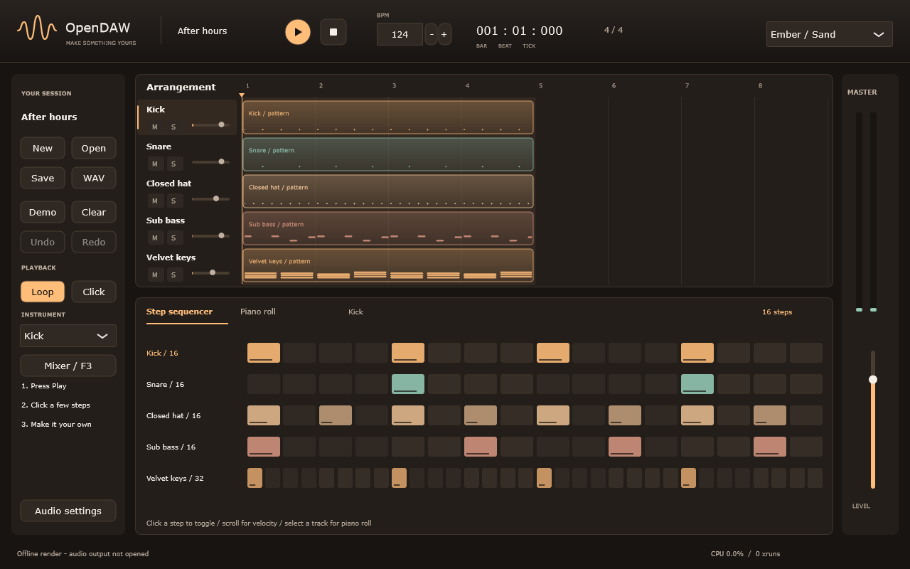

Поймай пульс.
Ударные и бас уже под рукой. Включай шаги, меняй силу удара и слушай, как появляется характер.
Ритм, который крутится в голове.
Мелодия, которую хочется сохранить.
Дай им место.
От первых ударных до последнего аккорда —
сохраняй внимание на музыке.

Три привычных действия.
Одна непрерывная работа.
Ударные и бас уже под рукой. Включай шаги, меняй силу удара и слушай, как появляется характер.
Нарисуй ноты и аккорды в piano roll. Двигай, удлиняй, дублируй. Ошибку всегда можно отменить.
Разложи паттерны по дорожкам, настрой баланс в микшере. Сохрани сессию или экспортируй её в WAV.
Ударные, бас и четыре аккорда.
Настоящий экспорт из OpenDAW, 8,5 секунды.
OpenDAW — бесплатная музыкальная рабочая станция для Windows.
Проект развивается: исходный код и история изменений доступны на GitHub.